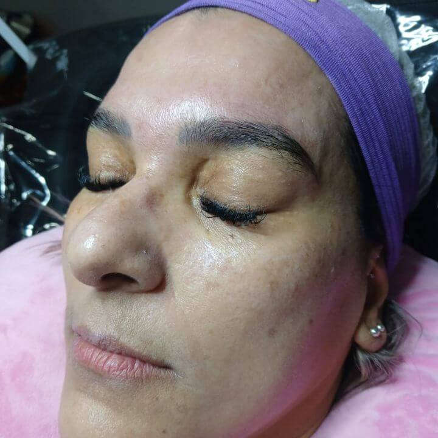
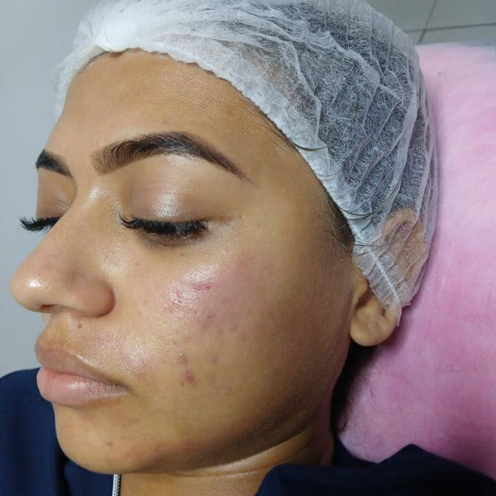
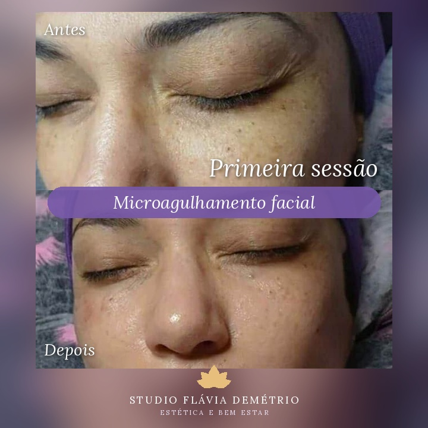
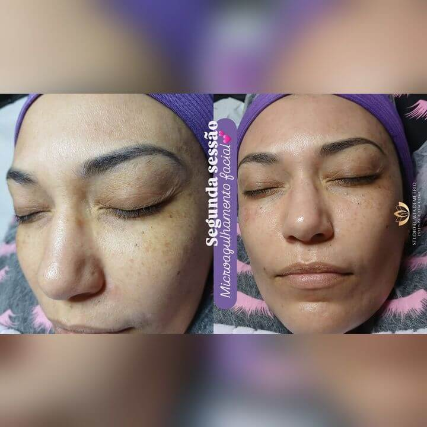

O que é Microagulhamento Facial em Paulicéia, São Bernardo do Campo?
Marcas de acne, poros dilatados, textura irregular e linhas finas incomodam, e você não está sozinha nisso. Talvez você já tenha tentado vários cuidados e, mesmo assim, sinta que sua pele continua sem uniformidade, opaca ou marcada.
O microagulhamento facial é um procedimento estético que realiza microperfurações controladas na pele para estimular os processos naturais de renovação e a produção de colágeno.
Ele pode ser indicado para ajudar a melhorar a textura da pele, a aparência dos poros, as marcas e cicatrizes de acne e as linhas finas, sempre de acordo com a avaliação profissional. Os resultados variam de pessoa para pessoa, porque dependem do seu tipo de pele, da região tratada e da constância dos cuidados.
Fale comigo! Posso te ajudar a entender se o microagulhamento facial é indicado para a sua pele. Me chame no WhatsApp, conte o que te incomoda e agende sua avaliação aqui no meu Studio, em Paulicéia, São Bernardo do Campo.
Agendar meu microagulhamento facial
Para quem pode ser indicado o microagulhamento facial?
- Para quem sofre com cicatrizes causadas por acne
- Para quem apresenta cicatrizes cirúrgicas
- Para quem possui poros dilatados
- Para quem sofre com manchas de melasma
- Para quem apresenta rugas finas
- Para quem sofre com flacidez
- Para quem deseja melhorar a textura da pele
Benefícios do microagulhamento facial em Paulicéia, São Bernardo do Campo
O microagulhamento facial pode ser procurado por diferentes motivos. A indicação depende da avaliação da pele e dos objetivos de cada pessoa.
- Pode ajudar a suavizar a aparência de cicatrizes
- Pode ajudar a melhorar a aparência dos poros dilatados
- Pode ajudar a melhorar a aparência das manchas de melasma
- Pode ajudar a suavizar a aparência de rugas e linhas finas
- Pode ajudar a melhorar a aparência da flacidez
- Pode ajudar a melhorar a textura e a uniformidade da pele
Antes e depois de microagulhamento facial em Paulicéia, São Bernardo do Campo


Imagens publicadas com autorização das clientes. Os resultados variam de pessoa para pessoa.
Studio Flávia Demétrio Estética e Bem Estar
O Studio Flávia Demétrio Estética e Bem Estar está localizado em Paulicéia, São Bernardo do Campo – SP. Se você mora em Paulicéia ou em bairros próximos e está pesquisando por microagulhamento facial perto de mim, entre em contato para saber mais sobre o atendimento.
Ver localizaçãoENDEREÇO COMPLETO — Paulicéia
São Bernardo do Campo – SP
Perguntas sobre microagulhamento facial
Qual o valor do microagulhamento facial em Paulicéia?
O valor pode variar conforme o protocolo e as necessidades da pele. Para saber o valor atualizado e consultar os horários disponíveis, fale comigo pelo WhatsApp.
O microagulhamento facial melhora a pele?
O procedimento pode auxiliar na melhora da textura, da aparência dos poros e das marcas, de acordo com a avaliação individual e o protocolo indicado.
O microagulhamento facial é indicado para todos os tipos de pele?
A indicação depende da avaliação profissional. Existem situações em que o procedimento não é recomendado, por isso a avaliação prévia é essencial.
Quanto tempo dura uma sessão de microagulhamento facial?
A duração varia conforme o protocolo e a área tratada. Na avaliação, você recebe a estimativa de tempo da sua sessão.
Quantas sessões de microagulhamento facial são necessárias?
O número de sessões depende dos objetivos e das características da sua pele, sendo definido após a avaliação.
O microagulhamento facial dói?
A sensibilidade varia de pessoa para pessoa. Conduzo o atendimento com cuidado e atenção ao seu conforto, e na avaliação explico como será a sua sessão.
Onde fazer microagulhamento facial em São Bernardo do Campo?
Aqui no Studio Flávia Demétrio Estética e Bem Estar, em Paulicéia, São Bernardo do Campo – SP. Fale comigo pelo WhatsApp para agendar.
Quer cuidar da textura e da aparência da sua pele?
Fale comigo, consulte o valor do microagulhamento facial e veja os horários disponíveis aqui no Studio, em Paulicéia.
Agendar minha avaliação pelo WhatsApp